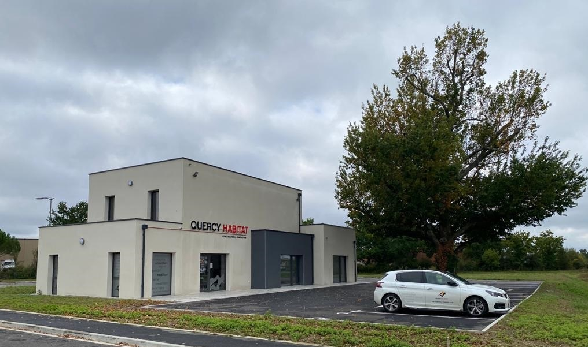
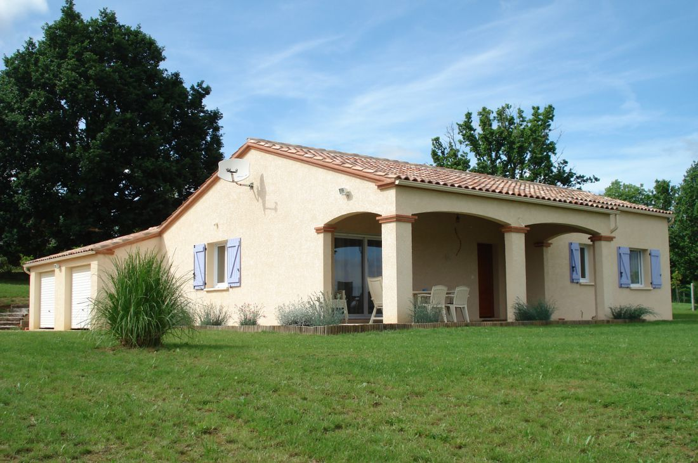
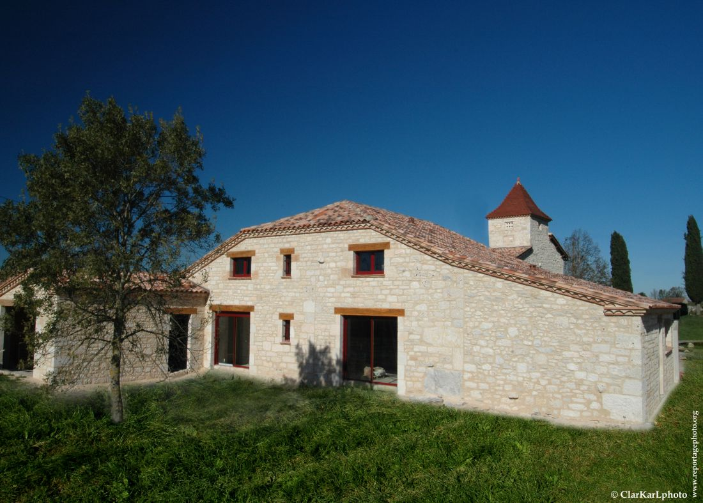
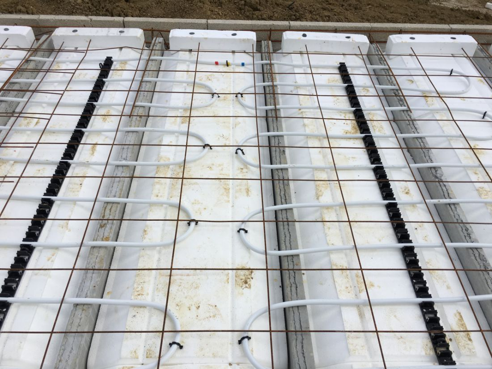

Construction neuve
Maisons individuelles sur mesure, de la conception à la livraison. Construction traditionnelle adaptée au style quercynois et aux normes basse consommation.
Construction neuve et rénovation en Tarn-et-Garonne et Lot. Un savoir-faire familial au service de votre projet.
Demander un devis gratuitFondée en 1986, l'entreprise Quercy Habitat est spécialisée dans la construction de maisons individuelles et la rénovation de bâti ancien. Implantée à Belfort-du-Quercy, Montauban et Caussade, notre équipe vous accompagne de l'étude de votre projet à la remise des clés.
Entreprise familiale dirigée par Pierre et Franck Boissel, nous mettons un point d'honneur à respecter les délais, les normes en vigueur et vos attentes. Nos certifications RGE et Qualibat attestent de notre engagement qualité.


Maisons individuelles sur mesure, de la conception à la livraison. Construction traditionnelle adaptée au style quercynois et aux normes basse consommation.

Rénovation de maisons anciennes en pierre, briquette et bâti traditionnel. Rénovation de façade, aménagement intérieur, mise aux normes.

Mise en œuvre de blocs PSE, planchers chauffants, isolation thermique performante. Des solutions innovantes pour une maison économe en énergie.
Reconnu Garant de l'Environnement
Qualibat
Certirenov
Fédération Française du Bâtiment
Quercy Habitat intervient dans le Tarn-et-Garonne (82) et le Lot (46). Nos agences à Montauban et Caussade nous permettent de couvrir l'ensemble du territoire.
Contactez-nous pour une étude gratuite et personnalisée de votre projet.
Appeler le 05 63 65 17 94Siège social
10 Chemin de Pibouls
46230 Belfort-du-Quercy
Agence Montauban
55 Boulevard Léonce Granié
82000 Montauban
Agence Caussade
329 Boulevard d'Occitanie
82300 Caussade
Téléphone
05 63 65 17 94
SARL Quercy Habitat - SIREN 337 905 202
RGE - Qualibat - Certirenov - FFB